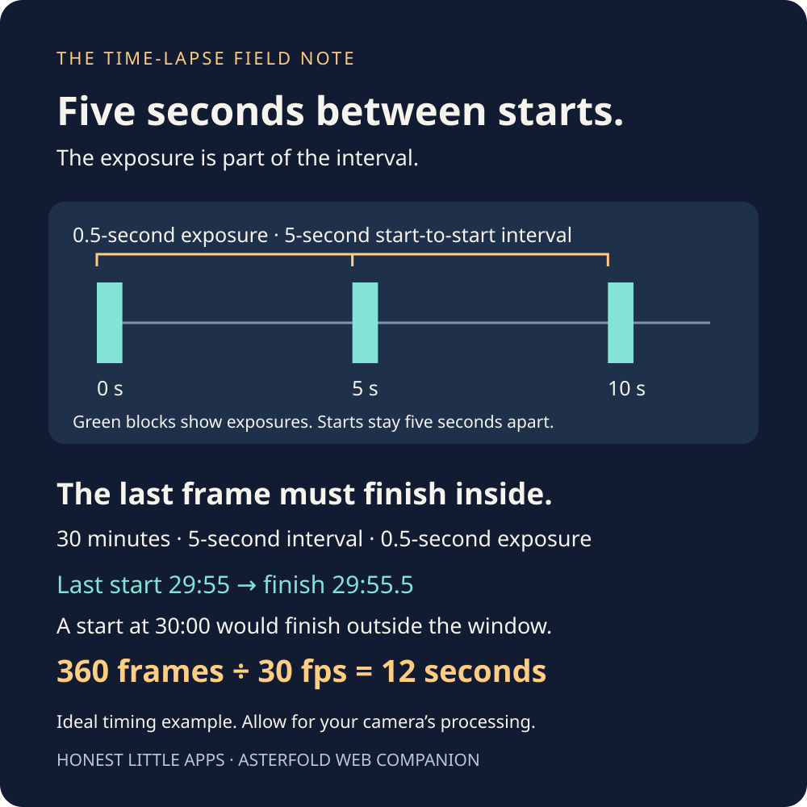

THE LIGHT WINDOW / THE FRAME BUDGET
Thirty minutes of sky.
Twelve seconds of film.
Before you start the sequence, check whether the frames fit. Turn a capture window into a realistic arithmetic plan for playback and storage.
Try the free tool ↓Already shot the sequence? Check your edit length.
An ideal timing model, not a camera controller or weather prediction. Actual frames depend on camera behaviour, exposure changes and processing.
THE INTERACTIVE WORKSPACE
Plan one fixed-interval sequence
The first exposure starts at time zero. “Interval” means time between the starts of consecutive exposures, not a delay added after each exposure.
Will your kept frames fill the edit?
After removing unusable photos, compare the remaining frame count with the length you want on the timeline. Each kept photo supplies one video frame.
Example: at 30 fps, 342 kept frames play for 11.4 seconds. A 12-second cut needs 360 frames, leaving an 18-frame shortfall. The calculation rounds the target up to a whole video frame.
USE IT IN REAL LIFE
An interval is more than a shutter speed.

The example uses 30 minutes, a 5-second start-to-start interval and a 0.5-second exposure. It fits 360 complete frames. Played at 30 frames per second, that is 12 seconds of video.
The last frame begins at 29 minutes 55 seconds and finishes half a second later. Starting another at the 30-minute boundary would put its exposure outside the window, so it is not counted.
Allow time for processing and writing files. Nikon’s interval-timer documentation notes that a too-short interval can cause skipped shots. Check your own camera’s interval definition, limits and behaviour; this worksheet does not validate hardware settings.
As the sky darkens, exposure may change. Recalculate for the longest exposure you expect. Storage here is photos × entered megabytes, with decimal GB; it excludes the finished video, duplicate files and other overhead. Battery life and visual smoothness are not estimated.
THE NEXT STEP
Choose the light window before you budget the frames.
Asterfold helps aim a viewpoint, plan a golden-hour, sunset or blue-hour session, and record what the sky actually did. Keep composition and gear notes with your plan.
Get Asterfold on the App Store ↗The free app includes planning for two viewpoints and its field journal. Plus adds unlimited viewpoints, longer outlooks and other features. Monthly, yearly and Lifetime options are listed. Asterfold does not capture this time-lapse for you; forecasts are not guarantees.
Publisher disclosure: Honest Little Apps publishes Asterfold and this companion. This is not an independent review. App details checked November 4, 2026.

Useful for someone else?
Share the public guide. Your entries and results are not included.
Open the public guide link